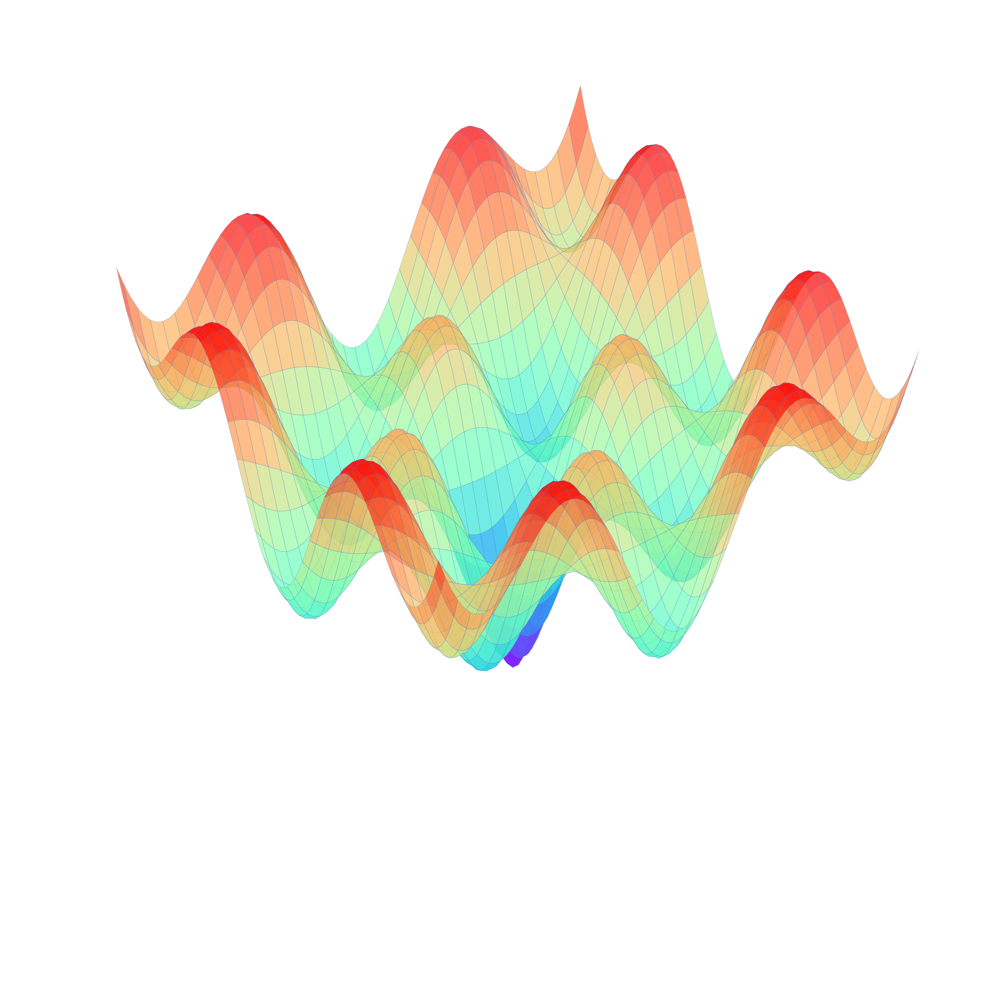

Solutions architect and research professor at the convergence of Quantum Computing and Artificial Intelligence (RAG). I combine the implementation of hybrid optimization models in the real sector with active leadership in STEM education and social impact, proving that engineering and frontier technologies are accessible to transform communities and SMEs.
M.S. in STEM Education
Santo Tomás University (In progress)
Specialist in Data Analytics
CUN
Bachelor of Education, Mathematics Major
Santo Tomás University Cum Laude
B.S. in Systems Engineering
CUN
KentryOps - Australia | Dic 2025 - Present
UNIMINUTO - Colombia | March - May 2026
Colombian Red Cross: Health Director (2012) and Regional Coordinator for more than a decade.
Colombian Civil Defense: Telematics projects and disaster response consultant (2014-2016).
Quantum Hub Peru: Mentor consolidating the quantum STEM ecosystem in LATAM.
Ing. Carlos Araque
Senior Databricks Engineer | Lead Architect, KentryOps Australia